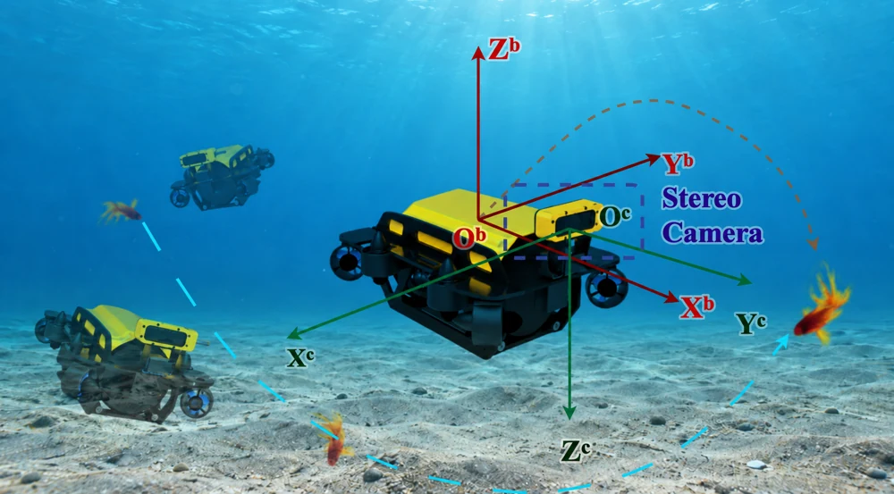
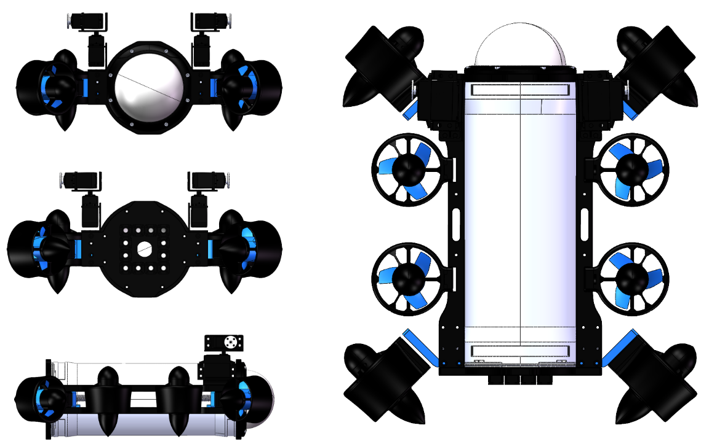

Underwater Visual Target Tracking with Target-Specific Depth Estimation and Adaptive Model-Fusion Predictive Control
研究概要
结合双目视觉、目标特定深度提取与卡尔曼滤波，估计目标三维相对状态；通过偏航与平移解耦，使用自适应模型融合预测控制，在执行器、跟踪距离与视场约束下跟踪水下目标。模型融合根据历史预测误差，动态调整匀速与零速目标运动模型的权重。
上海交通大学 · IWIN-FINS 实验室
自动化与感知学院 · 博士研究生
我关注水下机器人的感知、导航与控制，探索从状态估计、运动规划到真实机器人系统的连接。现于上海交通大学 IWIN-FINS 实验室开展研究，导师为 何建平教授。
此前就读于西安交通大学自动化（越杰班），于 2026 年 6 月毕业。
RECENT UPDATES
参与的水下视觉目标跟踪研究已发布 arXiv 预印本 ↗。
加入上海交通大学自动化与感知学院，开始博士阶段的研究。
作为队长带队首次参加 MATE 中国大陆区域赛，获 PIONEER 组别冠军。
PUBLICATIONS
从搜索策略到水下视觉跟踪，围绕机器人在复杂环境中的自主行为开展研究。

结合双目视觉、目标特定深度提取与卡尔曼滤波，估计目标三维相对状态；通过偏航与平移解耦，使用自适应模型融合预测控制，在执行器、跟踪距离与视场约束下跟踪水下目标。模型融合根据历史预测误差，动态调整匀速与零速目标运动模型的权重。
面向二维未知复杂环境中的静态目标搜索，提出两阶段搜索算法。该研究源于深海失事潜水器搜索建模工作，结合位置预测与 A* 路径搜索策略，探索复杂环境下的目标搜索问题。
RESEARCH EXPERIENCE
将算法与真实系统连接，关注感知的不确定性、规划的效率与工程实现。
九轴 IMU × 水压计 × EKF
基于 IWIN-FINS 水下机器人平台，构建融合九轴 IMU 与水压计数据的扩展卡尔曼滤波模型，完成嵌入式代码实现。实验中较仅依赖 IMU 的 Mahony 算法表现出更好的稳定性。
导师：何建平教授 · 上海交通大学
独立开展
Q-learning × DPSO × VND + IG
研究有限缓冲区、两阶段装配、无等待置换流水车间的死锁与调度问题。将 Q 学习引入离散粒子群优化，用于动态选择进化方式，并设计 VND + IG 两阶段局部搜索算法。
导师：冯彦翔副教授 · 西安交通大学
独立开展
国家级大学生创新训练项目
参与将示功图分类算法部署到 RK3568 嵌入式设备的智能终端项目，支持油井工况识别与自动间抽。主要负责异常示功图数据集的构建。
导师：张翠翠老师 · 西安交通大学
团队成员
OPEN SOURCE

BACKGROUND
自动化与感知学院 · 博士研究生
IWIN-FINS 实验室，研究方向为水下机器人的控制与规划。导师：何建平教授。
自动化（越杰班）· 钱学森书院
成绩 98.68；自动化大类排名 1/195，越杰班排名 1/30。学业导师：韩德强教授。
中国大陆区域赛 · PIONEER 冠军
搭建搭载四自由度机械臂的水下机器人平台；负责基于 YOLO 的水下物种识别、技术体系梳理与文档，并统筹团队备赛和模块协作。
自动分拣机器人 · 智能投送二等奖
基于 STM32F103ZET6 开发智能车的运动控制与通信逻辑，完成不同颜色邮件分拣、投递的规划与实际调试。
Finalist · 前 2%
建立深海失事潜水器位置预测模型与两阶段搜索策略；负责论文写作、LaTeX 排版、绘图、建模辅助及团队协调。
2023—2024、2024—2025 学年
基础奖学金与国际交流奖学金
2022—2023、2023—2024 学年
陕西赛区省级银奖
非数学 A 类 · 陕西省二等奖
CONTACT
欢迎就水下机器人、感知与控制、规划与优化等方向交流。